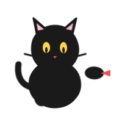

第 2 章 研究问题、变量与假设

学完本章后，你能够：
- 说明数据探索怎样形成研究问题，以及检验问题时为什么要明确对象和判断标准。
- 将一个保护类研究问题拆解为研究对象、处理因素、观测指标和研究假设四要素。
- 区分连续型、计数型、分类变量和比例变量，并说明变量类型如何决定方法选择。
- 写出一对清晰、可被检验、相互排他的零假设与备择假设。
- 根据处理因素和观测指标的类型，初步匹配后续统计方法。
一个哲学问题：数据能不能自己长出结论？
第一章末尾，站长留下了一个要紧的问题：我们真的有证据说这个物种在下降吗？故事在那里停下。但生活不会停。冬天过后，站长把它正式立项，要求保护站这一年要把这件事彻底搞清楚。
立项会上，新来的技术员提了一个看似聪明的方案：
“要不我们今年别预设任何东西，多放几条样线，多记一些数据，等数据收齐再看它告诉我们什么。”
这套做法适合探索。监测数据常常先暴露出意外模式，再形成新的研究问题。站长当前要回答的却不是数据里有什么，而是黄黄草是否在下降。要回答这个具体问题，调查对象、比较时间和判断标准必须在分析前写清楚。
《韩非子·外储说左上》记了一段问答。齐王问画师什么最难画，画师答：“犬马最难，鬼魅最易。”犬马天天能见，画得不像，旁人一眼便能指出；鬼魅没有公认的样子，反而无从核对。1
二十世纪科学哲学家卡尔·波普尔（Karl Popper）反复论证过一件事：纯粹的、不带预设的观察是不存在的。人不可能拿着一张白纸走进森林，把”看到的一切”原封不动地记下来：你必然要选：选哪片样地、哪个时间段、用什么标准算”开花”、忽略哪些”无关”的东西。一旦你做选择，你就已经带着某种问题、立场和假设在看世界。
“Observation is always selective. It needs a chosen object, a definite task, an interest, a point of view, a problem.”2
：Karl Popper, Conjectures and Refutations (1963), Ch. 1
日常监测可以用来发现异常，也可以产生新的研究问题。若要进一步判断开花数下降是不是真趋势，还要说明比较哪些样地和时间、怎样记录开花数，以及什么结果会改变原来的判断。没有这些限定，同一批数据可以产生多种解释，却无法说明哪一种更可信。
因此，在打开 R 或选择统计方法之前，先回答三个问题：
入场三问：你研究的对象是谁？测量的变量是什么类型？你想比较什么，什么结果会改变你的判断？
三问越清楚，后续的数据整理和方法选择越有依据。
从一句模糊感受到一份研究问题
回到濒危草本案例。站长立项时，写下来的第一行字是这样：
“黄黄草，明年要重点关注。”
这是一句模糊感受。它表达了关切，但不能被任何数据证实或反驳。“重点关注”是什么？是多设几条样线，还是改保护策略？“黄黄草”是哪个物种、哪几个种群、哪片保护区？没有一项是清楚的。
把这句话变成研究问题，需要四步翻译。这四步合起来叫研究问题的四要素：
第一要素。研究对象 ：谁被研究？
研究对象不是”植物”，也不是”濒危草本”。这两个尺度都太大。它必须落到具体的生物层级和空间范围：
- 物种层级：是种、亚种还是变种？黄黄草这个名字下可能有 2 个亚种，分布、花期、对降水的响应都不同。分析时混在一起，结论会自相矛盾。
- 种群范围。保护区内哪几个种群？是固定 10 个样地内的所有个体，还是连样地外的也算？
- 生命阶段：成体还是幼苗？分析”种群是否在下降”，要选有性繁殖个体（开花株）作为指标，因为它直接决定下一代的种子供给。
写成一句研究对象，应该是这样：
“本研究对象为某保护区内黄黄草指名亚种（Flos huanghuang subsp. typica）的开花成体，以保护站连续监测的 10 个固定样地为种群范围。”
第二要素：处理因素 ：什么在变化？
处理因素是你研究里”被改变的东西”。它有两种来源：
- 实验性处理：你主动施加的：例如”施药 vs 不施药”。
- 观察性处理：你不能改、只能观察的：例如”年份”、“坡向”、“降水”。
濒危草本研究是观察性的，因为我们不能”实验性地让某些种群少开花”。能拿来当处理因素的，是这些天然的变化来源：
| 候选处理因素 | 类型 | 为什么可能重要 |
|---|---|---|
| 年份（去年 / 今年） | 时间 | 直接对应”是否下降”的要紧的问题 |
| 样地编号（10 个） | 空间 | 不同样地的微环境天然不同 |
| 坡向（阴 / 阳） | 微生境 | 决定光照、湿度、积温 |
| 上年降水 | 气候 | 黄黄草对积温和水分敏感 |
注意，并不是处理因素列得越多越好。处理因素越多，你需要的样本量就越大，才能在每种组合里收集到足够的数据。第三章会讲怎么决定哪些进、哪些不进。
第三要素：观测指标 ：测什么？怎么测？
观测指标要回答两件事：测什么变量，以及测量过程是否一致。
测什么：黄黄草研究里最自然的指标是：
- 每样地开花成体数（一个数字，每年每样地一次）
- 样地内开花密度（=开花数 / 样地面积）
测量过程。这一步常被忽略，但它决定数据是否可比：
- 同一样地两年是否由同一调查员记录？不同人对”开花”的判断标准可能不同（含苞算不算？）。
- 是否在同一物候期调查？早一周或晚一周，结果可能差出一倍。
- “样地”是否真的固定？有些保护站每年用 GPS 临时圈一块”差不多大”的区域。这其实不是固定样地。
数据中的差异，有时来自真实变化，有时来自调查员、季节、方法的不一致。第二章不展开”如何控制”：那是第三章的实验设计，但你必须从一开始就意识到：测量过程本身是研究设计的一部分。
第四要素。研究假设 ：预期看到什么？
研究假设是对结果的明确预期。它可以来自理论、已有研究，也可以来自前期数据中发现的模式。准备检验时，需要把这种预期写成可以由观测结果支持或否定的判断。
针对黄黄草：
“如果黄黄草指名亚种的开花成体数量在保护区内确实在下降，那么 2026 年 10 个固定样地的平均开花数应当显著低于 2025 年。”
这句话有两个关键特征： - 它预先声明了方向（下降，而不是”有差异”）。 - 它提出了一个能让自己被反驳的预测。如果数据显示今年≥去年，假设就被否定。
我们把”翻译”的全过程整理一下：
| 翻译前（模糊感受） | 翻译后（四要素） |
|---|---|
| “黄黄草明年要重点关注” | 对象：黄黄草指名亚种开花成体，10 个固定样地 处理因素：年份（2025 vs 2026） 指标：每样地开花成体数，统一调查员、统一物候期 假设：2026 年平均开花数低于 2025 年 |
四要素写清后，模糊感受才成为可以安排调查和分析的研究问题。
变量类型决定你能用什么方法
四要素里”观测指标”那一栏，看似只是一个数字，但它的变量类型直接决定后面所有统计方法的选择。这是第二章的硬核知识点：变量类型不是数据格式，而是数据生成过程的属性。
按生成过程，保护类研究里的变量主要分三大类（“比例”作为计数型的特例，单独说明）：
连续型：可取任意实数
定义：变量在某个区间内理论上能取任意实数，且小数有意义。
| 黄黄草研究中的连续变量 | 单位 | 为什么是连续型 |
|---|---|---|
| 开花成体的株高 | cm | 38.5 cm 和 38.6 cm 都是合理读数 |
| 样地内土壤含水量 | % | 19.3% 是真实的物理量 |
| 一周内累计降水 | mm | 同上 |
适用方法：t 检验、ANOVA、线性回归、混合模型……几乎所有”经典”统计方法。
计数型：非负整数
定义：变量是离散的、非负的整数，由”数个数”产生。
| 黄黄草研究中的计数变量 | 为什么是计数型 |
|---|---|
| 每样地开花成体数 | 必须是整数，“23.5 株”不存在 |
| 红外相机两年累计拍到豹猫的次数 | 同上 |
| 一棵树上发现的瘿瘤数 | 同上 |
适用方法：泊松（Poisson）回归、负二项回归。用 t 检验/ANOVA 直接分析计数型数据是常见错误。
分类变量，有限类别
定义：变量取有限个类别，类别之间没有自然的数值大小关系（或只有顺序关系）。
| 黄黄草研究中的分类变量 | 类别 | 类型细分 |
|---|---|---|
| 样地坡向 | 阴坡 / 阳坡 / 平地 | 名义型（无顺序） |
| 样地植被等级 | 优 / 良 / 中 / 差 | 有序型（有顺序但无固定间距） |
| 调查员身份 | 张某 / 李某 / 王某 | 名义型 |
适用方法：卡方检验、列联表分析；作为分组变量时配合 ANOVA、回归。
比例：表面像连续，本质是计数
很多保护数据看起来是连续的（“死亡率 72%”），但它本质是两个计数的比值：
处理组的害虫死亡率 = 死亡虫数 ÷ 起始虫数
比例变量有两个限制： - 它不能取 0-1 之外的值。温度等连续变量没有这种约束。 - 它的方差取决于分母：10 只虫死了 7 只 (70%)，和 1000 只虫死了 700 只 (70%)，证据强度差几十倍。
正确的处理方式是用二项回归或广义线性模型（GLM, logit link），把分子分母都告诉模型；而不是把 0.72 这个百分数当成连续变量丢进 t 检验。第 12 章会展开。
判断：变量类型由数据生成过程决定，不由你的测量工具决定。把计数型数据写成小数，并不会让它变成连续型；把百分比写成小数，也不会让它变成连续型。
假设要怎么写：让自己有可能被反驳
科学假设的结构是一对：
- 零假设 H₀：默认状态：“什么都没发生”。
- 备择假设 H₁：你要检验的：“发生了某种效应”。
回到黄黄草研究：
| 假设对 | 内容 |
|---|---|
| H₀ | 2025 年与 2026 年 10 个固定样地的平均开花数没有差异（差异由抽样波动造成） |
| H₁ | 2025 年与 2026 年的平均开花数存在差异，且 2026 年偏低 |
写假设时，三个常见错误必须避开：
- H₀ 与 H₁ 不互斥。例如把 H₀ 写成”两年差异不大”，H₁ 写成”两年差异显著”：“不大”和”显著”不在同一个尺度上，无法做严格判断：
- 假设里没有方向。“两年平均开花数有差异”是一种双侧假设。它把”今年增加”和”今年减少”都算成 H₁。如果研究问题只关心”是否下降”，应该写单侧假设：“2026 年平均开花数低于 2025 年”。单侧假设把统计的检验力集中在这个方向上。
- 假设涉及无法测量的量。“黄黄草种群的健康度下降”：“健康度”不是一个能直接量化的变量，必须先翻译成”开花成体数”或”种子产量”等具体观测指标。
从假设到方法选择：一张通往后面章节的路线图
四要素和变量类型可以帮助缩小统计方法的候选范围。
| 处理因素类型 | 观测指标类型 | 经典方法 | 本书章节 |
|---|---|---|---|
| 二分类（两组） | 连续 | t 检验 | 第 8 章 |
| 多分类（三组及以上） | 连续 | ANOVA | 第 9 章 |
| 二/多分类 | 计数 | 泊松回归 / 负二项 | 第 12 章 |
| 二/多分类 | 比例（成败） | 二项 GLM（logit） | 第 12 章 |
| 连续 | 连续 | 线性回归 | 第 11 章 |
| 二/多分类 | 分类 | 卡方检验 | 第 10 章 |
把处理因素类型与观测指标类型放在一起，可以初步选择方法。具体分析还要结合研究设计、数据分布和重复测量结构判断。
判断：研究问题写清对象、变量和比较结构后，统计方法的候选范围才明确。方法复杂不能弥补研究问题含糊。
本章小结
- 数据可以先帮助发现问题。要比较变化或检验具体判断，还需明确研究对象、变量和判断标准。
- 任何保护类研究问题都可以拆成四要素。研究对象、处理因素、观测指标、研究假设。这套框架是你打开统计软件之前的”入场考试”。
- 变量类型由数据生成过程决定，不由测量工具决定。计数就是计数，比例就是两个计数的比值；用错类型，方法就一定错。
- 零假设与备择假设要相互排他、对应可测量的变量，并能被数据反驳。
练习
识别层。判断以下变量的类型（连续 / 计数 / 分类 / 比例），并说明判断依据：
- 一棵云南松的胸径；(b) 一个红外相机点位一年内拍到的独立动物数；(c) 一片人工林的植被等级（优/良/中/差）；(d) 某种害虫的种群死亡率。
解释层。把下面这句”模糊感受”翻译成一份四要素研究问题： > “我们林场北边那片病死松好像越来越多了。”
应用层。针对”湿度是否影响某种病害的发生率”这一问题，写出 H₀ 与 H₁。说明你写的是单侧还是双侧，以及为什么。
综合任务（用本章主案例）。帮站长把”黄黄草明年要重点关注”扩展为一份研究计划简表，至少包含研究对象、处理因素（≥2 个）、观测指标、变量类型、研究假设和可能的混淆因素。
AI 核查（可选）。把练习 4 的简表交给任意一个大语言模型，要求它指出”你这份计划里所有未明确的假设”。然后用本章的四要素 + 变量类型框架核查它的回答。它指出的”未明确假设”是真的缺失，还是它读得不够仔细？
继续学习
→ 第 3 章：实验设计：第二章告诉你”研究问题应该长什么样”，第三章回答”怎么把这份问题翻译成一个能落地的、避免混淆和偏差的实验或观察方案”。